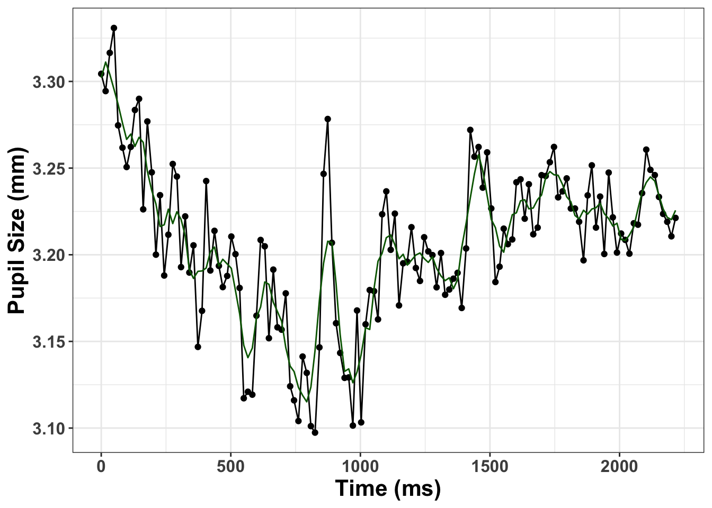
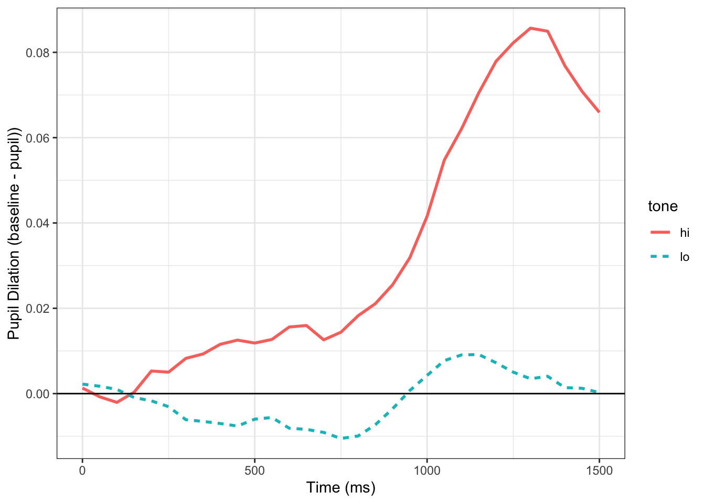

library(tidyverse)
library(remotes)
remotes::install_github("dmirman/gazer")
library(gazer)
library(data.table)
library(here)
remotes::install_github("tmalsburg/saccades/saccades", dependencies=TRUE)
library(saccades)Analzying GazePoint Pupil Data With GazeR
r
pupillometry
statistics
I demonstrate how to analyze pupil data from a GazePoint tracker with my eye-tracking R package gazeR.
In this vignette I am going to show you how to read in a GazePoint data file along with some behavioral data and use gazeR to preprocess the data.
Special thanks to Matthew K Robinson (Twitter:@matthewkrobinson) for letting me use some data from an auditory oddball task he conducted on himself (we do what we have to do as researchers :D): see Tweet below.
To get started, we need to load in some important packages and read in the GP data files.
Load Packages
Read Data
CNT TIME TIME_TICK FPOGX FPOGY FPOGS FPOGD FPOGID FPOGV
<int> <num> <i64> <num> <num> <num> <num> <int> <int>
1: 77433 1251.964 102150661899 -4.40518 -13.98604 1251.883 0.08093 1917 1
2: 77434 1251.980 102150821625 -4.39508 -13.95200 1251.883 0.09692 1917 1
3: 77435 1251.996 102150983307 -4.36427 -13.84678 1251.883 0.09692 1917 0
4: 77436 1252.013 102151149297 -4.40694 -13.99395 1251.883 0.09692 1917 0
5: 77437 1252.028 102151307171 -4.42096 -14.04383 1251.883 0.09692 1917 0
6: 77438 1252.045 102151469190 -4.40730 -14.00445 1251.883 0.09692 1917 0
LPOGX LPOGY LPOGV RPOGX RPOGY RPOGV BPOGX BPOGY BPOGV
<num> <num> <int> <num> <num> <int> <num> <num> <int>
1: 0.71795 0.50537 1 -9.38697 -28.00086 1 -4.33451 -13.74775 1
2: 0.71795 0.50537 1 -9.38697 -28.00086 1 -4.33451 -13.74775 1
3: 0.70711 0.51136 1 -9.14516 -27.18135 1 -4.21902 -13.33500 1
4: 0.70151 0.43055 1 -9.60071 -28.71280 1 -4.44960 -14.14113 1
5: 0.70270 0.42562 1 -9.60071 -28.71280 1 -4.44900 -14.14359 1
6: 0.69827 0.43625 1 -9.34484 -27.89350 1 -4.32329 -13.72862 1
LPCX LPCY LPD LPS LPV RPCX RPCY RPD RPS RPV
<num> <num> <num> <num> <int> <num> <num> <num> <num> <int>
1: 0.34860 0.59214 25.23420 0.83829 1 0.64310 0.60511 28.49240 1 1
2: 0.34860 0.59216 25.27127 0.83829 1 0.64314 0.60509 28.33148 1 1
3: 0.34845 0.59234 25.09805 0.83829 1 0.64293 0.60517 28.69580 1 1
4: 0.34846 0.59237 25.15947 0.83829 1 0.64286 0.60519 28.47081 1 1
5: 0.34838 0.59240 25.32249 0.84484 1 0.64285 0.60518 28.46784 1 1
6: 0.34830 0.59240 25.07680 0.85139 1 0.64269 0.60527 28.50588 1 1
LEYEX LEYEY LEYEZ LPUPILD LPUPILV REYEX REYEY REYEZ RPUPILD
<num> <num> <num> <num> <int> <num> <num> <num> <num>
1: -0.03362 -0.01726 0.56538 0.00455 1 0.03052 -0.01989 0.57411 0.00512
2: -0.03438 -0.01769 0.57821 0.00451 1 0.03056 -0.01997 0.57644 0.00513
3: -0.03438 -0.01769 0.57821 0.00449 1 0.03056 -0.01997 0.57644 0.00510
4: -0.03438 -0.01769 0.57821 0.00451 1 0.03056 -0.01997 0.57644 0.00509
5: -0.03501 -0.01795 0.58649 0.00448 1 0.03130 -0.02049 0.59132 0.00509
6: -0.03501 -0.01795 0.58649 0.00450 1 0.03130 -0.02049 0.59132 0.00508
RPUPILV CX CY CS BKID BKDUR BKPMIN LPMM LPMMV RPMM RPMMV
<int> <num> <num> <int> <int> <num> <int> <num> <int> <num> <int>
1: 1 0.33333 0.33333 0 0 0 20 4.54567 1 5.11614 1
2: 1 0.33333 0.33333 0 0 0 20 4.51065 1 5.12683 1
3: 1 0.33333 0.33333 0 0 0 20 4.48607 1 5.10490 1
4: 1 0.33333 0.33333 0 0 0 20 4.50748 1 5.09460 1
5: 1 0.33333 0.33333 0 0 0 20 4.47957 1 5.08827 1
6: 1 0.33333 0.33333 0 0 0 20 4.50258 1 5.07552 1
DIAL DIALV GSR GSRV HR HRV HRP TTL0 TTL1 TTLV USER
<num> <int> <int> <int> <int> <int> <int> <int> <int> <int> <char>
1: 0.088 1 0 0 0 0 454 -1 -1 0 0
2: 0.088 1 0 0 0 0 484 -1 -1 0 STARTEXPERIMENT
3: 0.088 1 0 0 0 0 456 -1 -1 0 STARTEXPERIMENT
4: 0.088 1 0 0 0 0 451 -1 -1 0 START
5: 0.088 1 0 0 0 0 482 -1 -1 0 START
6: 0.088 1 0 0 0 0 454 -1 -1 0 STARThead(bs) subject trial tone rt response
<int> <int> <char> <int> <char>
1: 13 1 lo 2113 None
2: 13 2 lo 2102 None
3: 13 3 lo 2107 None
4: 13 4 lo 2108 None
5: 13 5 lo 2107 None
6: 13 6 lo 2103 NoneWhat we are going to do is run the GazePoint file through the merge_gazepoint function. The function below takes a list of files called file_list and merges all the files together, appends a subject column, creates a trial column using the USER column (GazePoint only allows messages through this channel), creates a time variable (in milliseconds). In the merge_gazepoint function the trail_msg argument requires users to denote a message used in the USER column that references the start of the trial–in our case the START message denotes the start of a new trial. This is a solution by Matt Robinson, but there are other ways one could extract the trial number. What I have done in the past is append a message with the trial iteration (e.g., START_1) in Python and use the separate function to get the trial number.
# A "monocular mean" averages both eyes together. If data is available in just
# one eye, use the available value as the mean, unless we need_both is TRUE.
#' @param x1 pupil left
#' @param x2 pupil right
#' @return vector with monocular mean values
compute_monocular_mean <- function(x1, x2) {
xm <- rowMeans(cbind(x1, x2), na.rm = TRUE)
# NaN => NA
ifelse(is.nan(xm), NA, xm)
}
# function for processing GazePoint data
merge_gazepoint <- function (file_list, trial_msg = "START"){
#file list is path to .xls files
#vroom is faster
library(data.table)
file_ids=str_replace_all(basename(file_list),"([:alpha:]|[:punct:])","") # remove everything but numeric values
data <- map2(file_list, file_ids, ~fread(.x) %>%
mutate(id = .y)) %>%
bind_rows()
d = data %>%
dplyr::rowwise() %>%
dplyr::mutate(pupil=compute_monocular_mean(RPMM, LPMM)) %>% # average both eyes
dplyr::ungroup() %>%
dplyr::mutate(pupil = ifelse(RPMMV == 0|LPMMV == 0, 0, pupil), #missing data labeled as blinks
new_trial = ifelse(USER == trial_msg & lag(USER) != trial_msg, 1, 0), # Label new trials
trial = cumsum(new_trial), # Create a trial variable
time = floor(TIME*1000)) %>%
group_by(trial) %>%
dplyr::mutate(time=time - min(time)) %>%
ungroup() %>%
dplyr::select(id, time,trial,pupil,BPOGX, BPOGY, USER) %>%
dplyr::rename("message" = "USER", "subject"= "id", "x" = "BPOGX", "y" = "BPOGY") %>%
dplyr::filter(trial > 0)
return(d)
}Merge Files
setwd(here()) # setwd
gp_file<-list.files(here::here(), pattern = "eye_13.tsv") # get files
setwd(here())
d=merge_gazepoint(gp_file, trial_msg = "START")
d$subject<-as.numeric(d$subject)
pdb <- full_join(bs, d)
pdb <- as_tibble(pdb)
pdb# A tibble: 73,724 × 10
subject trial tone rt response time pupil x y message
<dbl> <dbl> <chr> <int> <chr> <dbl> <dbl> <dbl> <dbl> <chr>
1 13 1 lo 2113 None 0 4.80 -4.45 -14.1 START
2 13 1 lo 2113 None 16 4.78 -4.45 -14.1 START
3 13 1 lo 2113 None 32 4.79 -4.32 -13.7 START
4 13 1 lo 2113 None 48 4.80 -4.58 -14.5 START
5 13 1 lo 2113 None 64 4.80 -4.58 -14.5 START
6 13 1 lo 2113 None 81 4.79 -4.63 -14.7 START
7 13 1 lo 2113 None 97 4.81 -4.42 -14.0 START
8 13 1 lo 2113 None 113 4.80 -4.42 -14.0 TONE
9 13 1 lo 2113 None 129 4.78 -4.23 -13.5 TONE
10 13 1 lo 2113 None 145 4.77 -4.34 -13.8 TONE
# ℹ 73,714 more rowsBlinks
Finding Blinks
The GazePoint data does not indicate where blinks occurred. What we are going to do is use the blink_detect function in gazer. This relies on the saccades package (https://github.com/tmalsburg/saccades) which uses a velocity based measure based on X,Y coordinates to find blinks. Once we find the blinks we can change the pupil size at that time point as NA and interpolate over it.
As a note, the GazePoint does not seem to sample consistently. In this case, it samples every 16 or 17 ms. This is a problem for some other blink detection measures (e.g., the noise based pupil function). One soultion would be to downsample the data at the onset so there is consistancy from sample to sample.
blinks_merge<- blink_detect(pdb)
blinks <- blinks_merge %>%
dplyr::group_by(grp = cumsum(!is.na(startend))) %>%
dplyr::mutate(Label = replace(startend, first(startend) == 'start', 'start')) %>% #extends the start message forward until end message
dplyr::ungroup() %>%
# label blinks as 1
dplyr::select(subject, trial, time, x, y, pupil, message, tone, Label, -grp)
blinks_data <- blinks %>%
dplyr::mutate(blink=ifelse(!is.na(Label), 1, 0), pupil=ifelse(blink==1 | pupil==0, NA, pupil))%>%
dplyr::ungroup()%>%
dplyr::select(subject, time, trial, pupil, x, y, trial, message, tone, blink, -Label)Here is a look at the trials containing blinks:
| subject | time | trial | pupil | x | y | message | tone | blink |
|---|---|---|---|---|---|---|---|---|
| 13 | 2167 | 10 | NA | 0.9364 | 1.95015 | POSTTONE | lo | 1 |
| 13 | 2183 | 10 | NA | 0.9364 | 1.95015 | POSTTONE | lo | 1 |
| 13 | 2199 | 10 | NA | 0.9364 | 1.95015 | POSTTONE | lo | 1 |
| 13 | 2216 | 10 | NA | 0.9364 | 1.95015 | POSTTONE | lo | 1 |
| 13 | 0 | 11 | NA | 0.9364 | 1.95015 | START | hi | 1 |
| 13 | 16 | 11 | NA | 0.9364 | 1.95015 | START | hi | 1 |
Extending Blinks
I am extending blinks 100 ms forward and backward in time.
Interpolate Blinks
Here let’s linearly interpolate the blinks and then smooth the data using a 5-point moving average.
# Smooth and Interpolate
smooth_interp <- smooth_interpolate_pupil(pup_extend, pupil="pupil", extendpupil="extendpupil", extendblinks=TRUE, step.first="smooth", maxgap=Inf, type="linear", hz=60, n=5)Plot Interpolated Trial
interp_graph <- smooth_interp %>%
dplyr::filter(trial=="400")
bold <- element_text(face = "bold", color = "black", size = 14) #axis bold
#Graph interpolation
pup_g<- ggplot(interp_graph, aes(x= time, y= pupil)) + geom_point()+ geom_line(colour="black") +
geom_line(aes(x=time, y=pup_interp), colour="darkgreen") + xlab("Time (ms)") + ylab("Pupil Size (mm)") + theme_bw() + theme(axis.title.y=element_text(size = 16, face="bold"), axis.title.x = element_text(size=16, face="bold"), axis.text.x=element_text(size = 12, face="bold"), axis.text.y=element_text(size=12, face="bold"))
print(pup_g)
Baseline Correction
Here we will do a subtractive baseline correction taking 250 ms before the onset of the tone as baseline.
#use messages to baseline correct
baseline_pupil<-baseline_correction_pupil(smooth_interp, pupil_colname="pup_interp", baseline_window=c(0,250), baseline_method = "sub")
head(baseline_pupil)# A tibble: 6 × 13
subject trial baseline time pupil x y message tone blink extendpupil
<dbl> <dbl> <dbl> <dbl> <dbl> <dbl> <dbl> <chr> <chr> <dbl> <dbl>
1 13 1 4.80 0 4.80 -4.45 -14.1 START lo 0 4.80
2 13 1 4.80 16 4.78 -4.45 -14.1 START lo 0 4.78
3 13 1 4.80 32 4.79 -4.32 -13.7 START lo 0 4.79
4 13 1 4.80 48 4.80 -4.58 -14.5 START lo 0 4.80
5 13 1 4.80 64 4.80 -4.58 -14.5 START lo 0 4.80
6 13 1 4.80 81 4.79 -4.63 -14.7 START lo 0 4.79
# ℹ 2 more variables: pup_interp <dbl>, baselinecorrectedp <dbl>Missing Data
Let’s see how much missing data there is and remove trials with greater than 20% missing data.
pup_missing<-count_missing_pupil(baseline_pupil, missingthresh = .5)
# remove outliersI remove about 15 percent of trials.
Unlikely Pupil Sizes
Now let’s keep pupil diameter sizes between 2 mm and 9 mm
MAD
Get rid of artifacts we might have missed during some earlier steps.
Onset
Let’s only look fron the start of the trial until 1500 ms
Downsample
Downsample the time-course to 50 ms.
#downsample
timebins1<- downsample_gaze(baseline_pupil_onset, bin.length=50, timevar = "time", aggvars = c("subject", "tone", "timebins"), type="pupil")
timebins1# A tibble: 62 × 4
subject tone timebins aggbaseline
<dbl> <chr> <dbl> <dbl>
1 13 hi 0 0.00130
2 13 hi 50 -0.000752
3 13 hi 100 -0.00206
4 13 hi 150 0.000331
5 13 hi 200 0.00530
6 13 hi 250 0.00503
7 13 hi 300 0.00826
8 13 hi 350 0.00930
9 13 hi 400 0.0116
10 13 hi 450 0.0125
# ℹ 52 more rowsVisualize Time-course
cursive_plot <-ggplot(timebins1)+
aes(timebins, aggbaseline, linetype=tone, color=tone) +
stat_summary(fun = "mean", geom = "line", size = 1) +
theme_bw() +
labs(x ="Time (ms)",y ="Pupil Dilation (baseline - pupil))") +
geom_hline(yintercept=0.0)
print(cursive_plot)
This looks very similar to the one in the Tweet albeit a bit smoother as a result of the extra preprocessing done.
Citation
BibTeX citation:
@online{2021,
author = {},
title = {Analzying {GazePoint} {Pupil} {Data} {With} {GazeR}},
date = {2021-04-21},
url = {https://www.drjasongeller.com/blog/posts/2021-04-21-gazePoint_gazer_2/},
langid = {en}
}
For attribution, please cite this work as:
Analzying GazePoint Pupil Data With GazeR. (2021, April 21). https://www.drjasongeller.com/blog/posts/2021-04-21-gazePoint_gazer_2/